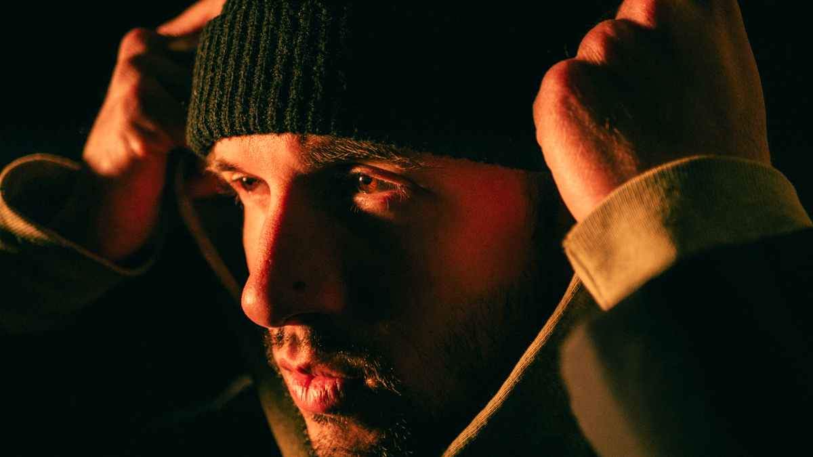
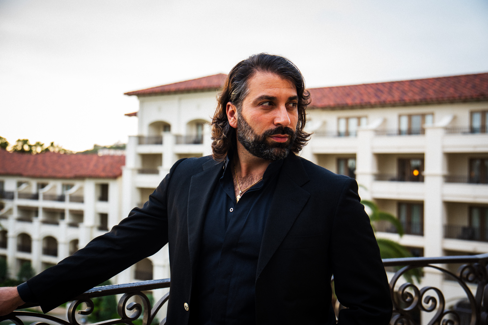
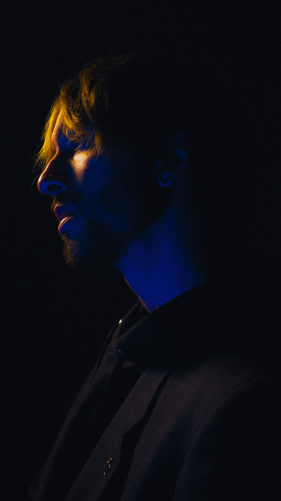
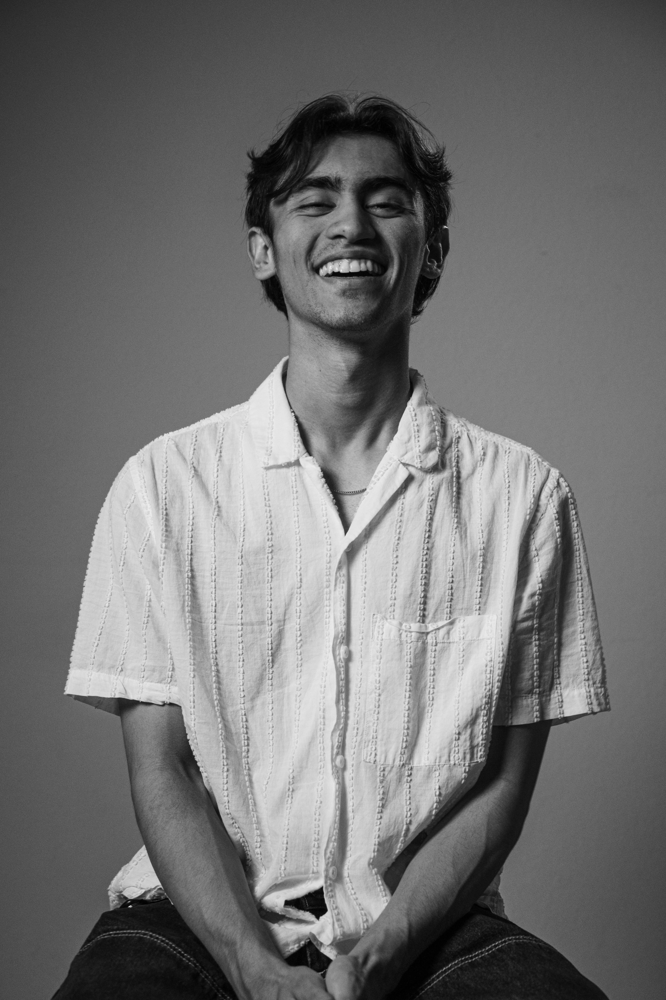
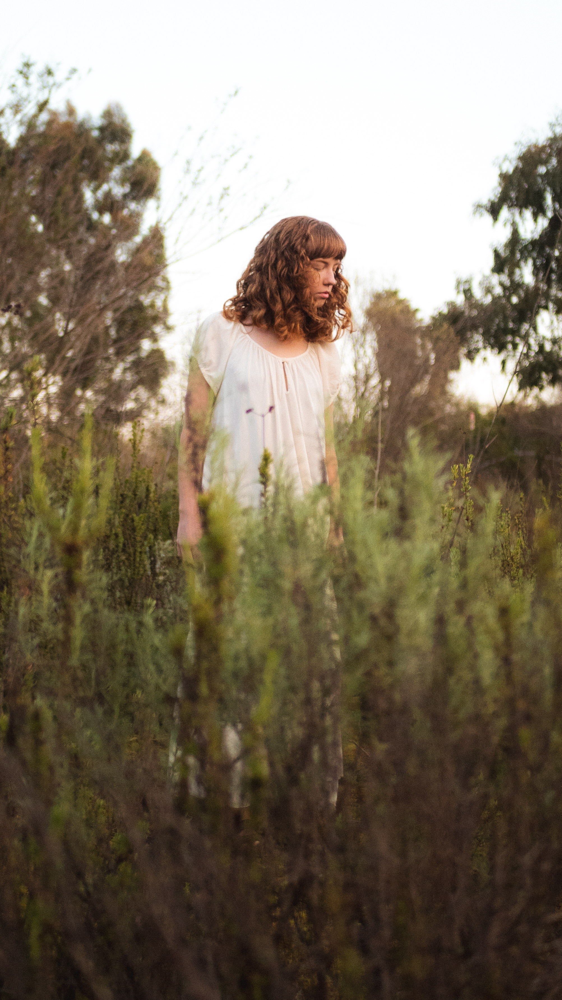

Portraiture / Personal identity
Presence
Portraits for people whose image carries part of the message.
Photography / Film / Direction
Built to the assignment
Built to the assignment
The assignment
Make the camera communicate what people already feel in the room.
The goal is not simply to make someone look polished. It is to translate character, authority, warmth, tension, humor, or edge into images that feel unmistakably theirs.

Direction
A strong portrait is not a pose repeated five ways. Change the distance, energy, light, behavior, or point of view so every frame reveals something new.



Portraiture / Personal identity